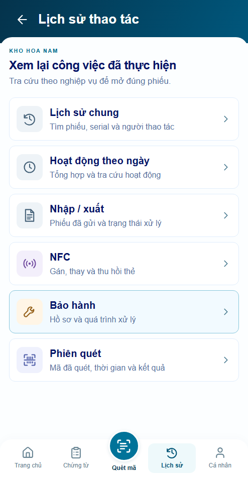
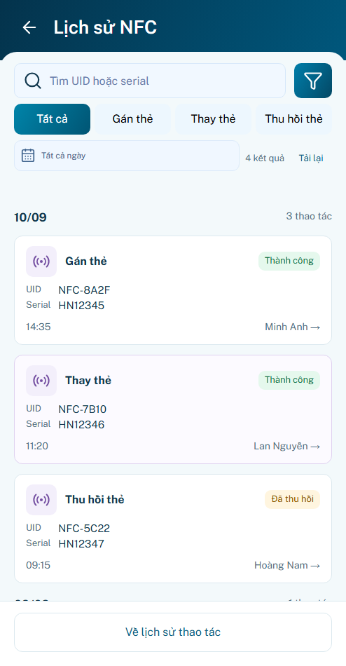
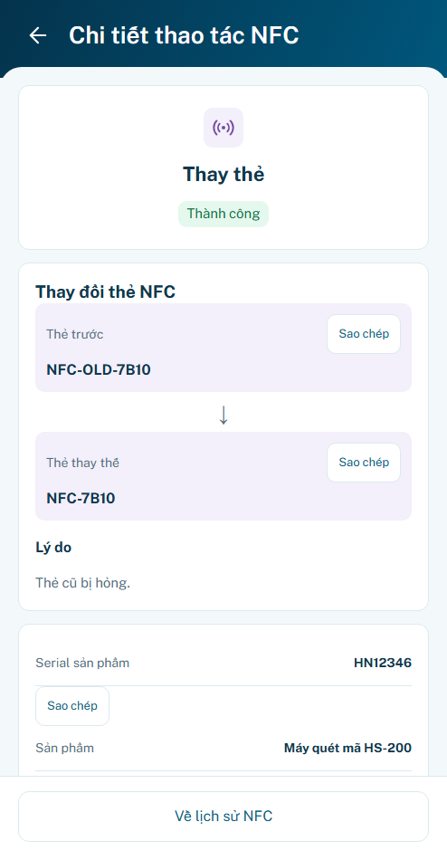

MOTION P22 · Lịch sử thao tác & NFC
Motion mới chờ bạn review · Giữ P22 r03 tạm chốt
Hub/nav phản hồi100ms · filter/indicator140ms · route chi tiết180ms qua AppShell. OS reduced/off giữ nguyên dữ liệu và thao tác. UID/event ID/cảnh báo nguồn có ngay; cuộn native, không stagger hay typewriter.
Mở preview · Báo cáo · Kết quả · Nguồn quyết định
minhanh / preview → xác nhận phiên → Lịch sử → NFC. Chọn Mẫu B22 và motion auto/reduced/off ở bộ mô phỏng ngoài khung. Mặc định nguồn event chưa khả dụng. Reload/logout mất dữ liệu đang thử.
100 test logic · 21 nhóm motion · 43 nhóm hồi quy P22 · 36 nhóm shell · 12 so sánh geometry · 40 layout · 4 viewport footer.
Ảnh dưới chỉ là trạng thái đã settle. Trace thực: auto · OS reduced · off. Không có benchmark FPS thiết bị; backend/NFC thật/lưu bền chưa xác minh.
P22.S01
Trước motion Sau settle · auto
Sau settle · auto
OS reduced / off
P22.S02
Trước motion
Sau settle · auto
OS reduced / off
P22.S03
Trước motion Sau settle · auto
Sau settle · auto
OS reduced / off